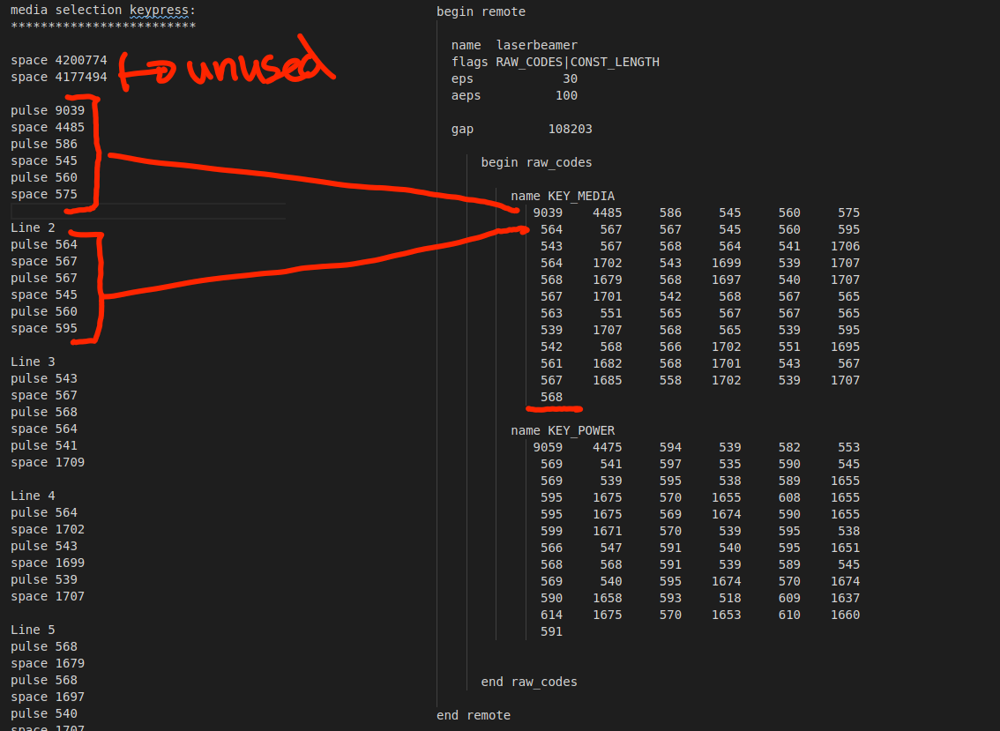

IR REMOTE LIRC¶
Using lirc to remotely control devices with IR (infrared).
PocketVJ Exhibition Image 4.0.7 or older do following steps:
First uninstall the out of date lirc version with:
sudo apt-get purge lirc
sudo apt-get autoclean
Then install the special patched version (needs CP 4.0.6 or newer) with:
sudo apt-get install -y /var/www/sync/debs/liblirc-client0_0.9.4c-9_armhf.deb
sudo apt-get install -y /var/www/sync/debs/liblirc0_0.9.4c-9_armhf.deb
sudo apt-get install -y /var/www/sync/debs/lirc_0.9.4c-9_armhf.deb
This will take a few minutes.
After comnpletion, edit the .conf file to enable sending:
sudo nano /etc/lirc/lirc_options.conf
driver = default
device = /dev/lirc0
From here on the software is installed. Now we need to enable the IR sender:
sudo nano /boot/config.txt
dtoverlay=gpio-ir-tx,gpio_pin=4
Finally we copy the IR protocol file to the lirc config, I always store mine in:
/var/www/sync/remotes/
In this example, the IR file made for U400 Livia Ultra Short Throw Laser Beamer:
sudo cp /var/www/sync/remotes/laserbeamer.lircd.conf /etc/lirc/lircd.conf
Connect the IR sender as documented in EXPANSION.
Test it with (use a digicam to check if diode is flashing):
irsend SEND_ONCE laserbeamer KEY_POWER
Recording your own IR is way more complicated and will not be described here in detail, only some hints:
sudo nano /etc/lirc/lirc_options.conf =>
driver = default
device = /dev/lirc1
nano /boot/config.txt =>
dtoverlay=gpio-ir,gpio_pin=18 #pin of receiver
dtoverlay=gpio-ir-tx,gpio_pin=4 #pin of sender
stop lircd.service =>
sudo /etc/init.d/lircd stop
test =>
mode2 -d /dev/lirc1
record =>
irrecord -f -d /dev/lirc1 ~/lircd.conf
nice tool to check =>
sudo ir-keytable -c -p all -t
Most important keys:
KEY_POWER
KEY_OK
KEY_HOME
KEY_MENU
KEY_MEDIA (source select)
KEY_VOLUMEUP
KEY_VOLUMEDOWN
KEY_MUTE
KEY_UP
KEY_LEFT
KEY_DOWN
KEY_RIGHT
KEY_PLAY
KEY_PAUSE
KEY_F1 (focus+)
KEY_F2 (focus-)
KEY_F3 (keystone+)
KEY_F4 (keystone-)
I ended up in listing the raw ir commands in terminal with:
mode2 -d /dev/lirc1
Ignore the first 2 blocks, then always make 6 blocks for one line:
Which is extremely time consuming and frustrating, but it works!